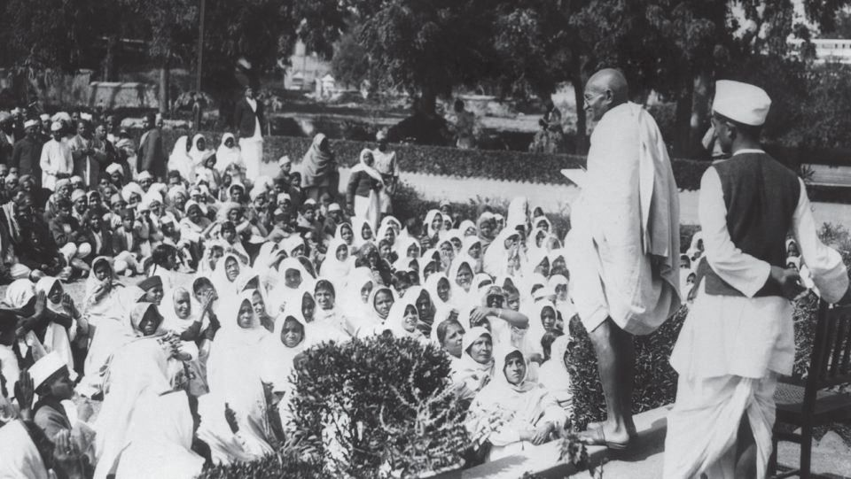
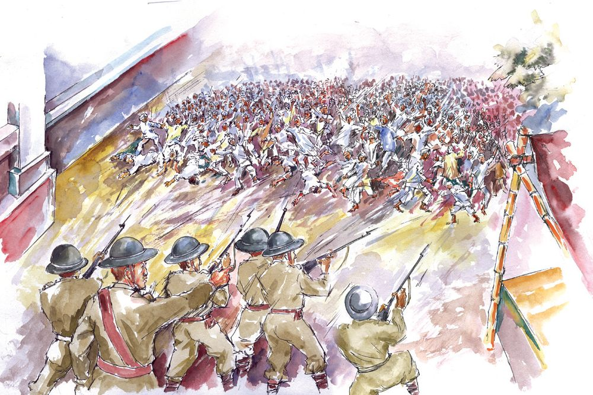

Ninth January 1915 –morning
An unusual crowd has gathered at Apollo Banther
harbour, Bombay. People are waiting for the arrival
of a foreign ship. An important person is arriving in
the ship. All have come there to welcome him. The
ship reached the shore. A tall lean man in a long
coat and turban, walked out of the ship towards the
crowd.
Who is this great man?
Yes,
Now look at the condition of India during British rule, when Gandhiji
came back from South Africa.
vers
nd wea
a
s
n
a
Artis
starving
in misery
e
v
li
s
t
n
Peasa
Students
punished for
Taxe
dside
s in
n a roa iotic
sin
gin
o
g
pat
rio
tic
c
d
e
new reas
patr
hang
son gs
Editor publishing
intro taxes ed,
r
duc
tree fo
song
ed
Did you examine the collage?
The British ruled India threatening and killing the Indians. We were
forced to obey all their rules. Gandhiji exhorted the people to stand
united against the harassment and injustice of the British rulers.
He devised new means of protests, like Satyagraha for the fight
against the British.
Satyagraha
Gandhiji’s simple way of life,
pleasing speech… this was
Satyagraha means holding
on to truth. Never accept
enough for him to capture the
anything
evil, oppose it.
minds of ordinary people.
However, do not use violence while
People supported him with opposing. Never give up nonviolence.
great enthusiasm. This mass
support raised him to the
leadership of the Indian National Congress. Consequently, the
Indian freedom struggle became a constructive mass movement
rooted in nonviolence.
The peasants of Champaran village in Bihar were in great misery.
They were forced to cultivate indigo in most of their fields and sell
it at a rate fixed by British landowners. Later these British
landowners levied excess taxes too. Thus after each harvest, the
farmers became more and more debt-ridden. Hearing about their
hardships, Gandhiji and his followers reached Champaran. Then
Gandhiji led a Satyagraha struggle against the British and set the
peasants free from misery.
31
The Road to Independence
The first struggle for peasants
Page 32
Figure fig_ch03_p032_01 (Page 32)

Figure fig_ch03_p032_02 (Page 32)
More struggles
Some other struggles led by Gandhiji are the Kheda Satyagraha
and the Ahmedabad textile mill strike.
The Kheda Satyagraha demanded that the taxes imposed on
peasants should be reduced when the yields are low. The
Ahmedabad textile mill strike was for raising wages. All these
satyagrahas, led by Gandhiji, were victorious.
Let’s complete the table:
Struggles
Champaran Satyagraha
Special Features
misery of peasants
Gandhiji’s Satyagraha experiment
Environmental Science
hardship of peasants reduced
32
Page 33
Figure fig_ch03_p033_01 (Page 33)

Figure fig_ch03_p033_02 (Page 33)
British cruelty
The British introduced an Act which gave them power to arrest and
imprison anyone they wanted without trial for any length of time.
They suppressed the peaceful protests led by Gandhiji against this
Act and arrested him.
Later the British unleashed much cruelty on the Indians. The place
known as Jallianwallabagh in Punjab. A big open ground
surrounded by huge buildings, with only one entrance. A meeting
was going on there to protest against the injustice of the British.
Suddenly gunshots were heard, one after the other…
continuously… as if a cracker house was set on fire! The shocked
and horrified people ran all around for life. Hundreds of people lost
their lives either in the firing or in the rush. And many more people
were wounded. This incident, that shocked the Indian mind, took
place on 13 April, 1919. On hearing this, Gandhiji wished to reach
Jallianwallabagh as soon as possible. But the British army did not
allow him to even enter Punjab. This disappointed Gandhiji further
more.
33
The Road to Independence
How did the British respond to the freedom struggle? Discuss. Note
down your findings in the environment diary.
Non- cooperation Movement
Gandhiji called for a country wide strike after the
Jallianwallabagh incident.
It was decided not to cooperate with
the British Government at
any level.
What were the
demands of the
Non-cooperation
Movement?
ote
Promadi
Kh
Avoid
Liquor
Propagate
the Hindi
Language
Boycott
foreign
clothes
Discuss.
Struggles in
Kerala too
As part of the Noncooperation Movement
Gandhiji visited Kerala
also.
Gandhiji’s arrival provided strength and vigour to the Noncooperation Movement in Kerala.
We ,Indians, are
Environmental Science
children of one
mother. Our joys and
sorrows are the same.
Our goal is the
freedom of India.
Salt – a weapon of struggle
Salt is a thing we all need.The British levied taxes on salt
which Indians prepared on their own seashores. Those who
did not pay taxes could be even imprisoned. This was the law.
Gandhiji warned of mass violation of law if the tax on salt
was not withdrawn.
Dandi March
Twelfth March 1930 - morning
The violation of the salt law marked the beginning of the Civil
Disobedience Movement in the country.
35
The Road to Independence
Sabarmati Asram woke up earlier that day. Thousands of
people including Jawaharlal Nehru, and Sarojini Naidu
gathered there. Gandhiji told them, “I will return only if I win,
or else I will offer my body to the seas’’. Gandhiji and his
followers walked a long distance of about 388 kms from
Sabarmati to the shores of Dandi, in the hot sun. In front
of an onlooking crowd Gandhiji took a handful of salt, and
raising his hand, said “This handful of salt is the symbol of
strength.This fist may be crushed but the salt will not be
given up”. Thus salt became the symbol of strength in the
history of the Indian freedom struggle.
Such songs provided more enthusiasm to the struggle for
freedom. Singing these songs, the Satyagrahis set for the
Payyanur sea shore in Kannur to violate the law on salt tax.
K. Kelappan led the protest in Kerala. Later he came to be
known as ‘Kerala Gandhi’.
Many leaders including Gandhiji, who took part in the Salt
Satyagraha were arrested. They were brutally beaten up by
the police.
Identify other similar protests in Kerala related to the freedom
struggle.
Freedom fighters of Kerala
Malabar rebellion
Environmental Science
36
Besides K.Kelappan, T.K. Madhavan, Mohammed
Abdu Rahman , K. P. Kesava Menon, A. K. Gopalan,
Akkamma Cherian, Kutty Malu Amma etc., were
the main leaders who led the freedom struggle
in Kerala.
Quit India (1942)
Jawaharlal Nehru presented the Quit India Resolution at the
Congress session held in Bombay. Then Gandhiji called for the
ultimate struggle for freedom.
“Let us prepare for the ultimate struggle. A strong struggle that
excel all earlier struggles. Till now we protested in a peaceful way.
Now it is time to finish this up as early as possible”. The slogan ‘Quit
India’ (Leave India) added vigour to the struggle. ‘Do or Die’, the
exhortation of Gandhiji was
The United Nations has declared
taken up by the masses.
October 2nd, the day of
Everyone, including students,
Gandhiji's birth, as World Non
joined the struggle. We observe
violence Day. This is the world’s
August 9 as ‘Quit India Day’.
recognition of Mahatma
Gandhi’s message of ‘ahimsa’
We have several other leaders
Jawaharlal Nehru
Sardar Vallabhbhai
Patel
Bhagat Singh
Sarojini Naidu
Balagangadhar
Tilak
Khan Abdul Gaffar
Khan
Subhash Chandra
Bose
Gopalakrishna
Gokhale
Dr.S Rajendra
Prasad
Maulana Abul
Kalam Azad
It was the result of the sacrifice and struggles of several such brave
patriots that India became independent on 15 August 1947.
37
The Road to Independence
who fought bravely for freedom.
Let us familiarize them.
Collect pictures and details of the leaders of freedom struggle
in Kerala.
Collect pictures of the brave patriots who took part in the Indian
freedom struggle. Write brief notes.
Collect songs of the freedom struggle and patriotic songs and
sing them.
Collect the slogans related to the freedom struggle.
Read the following books to know more about Gandhiji.
1. Kuttikalude Mahatma Gandhi
Prepare short plays based on the life of Gandhiji and events
of our freedom struggle. Enact them during the celebration of
our National Days in your school.
Documentary, Film show on ''Freedom struggle'', ''Gandhiji''.